Radar brings its own light. NISAR sends two radar waves and reads what comes back.
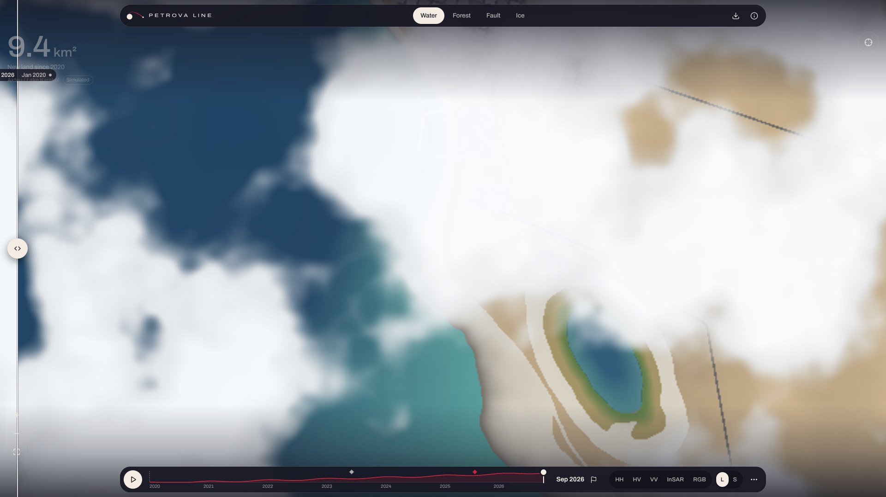
Camera: the shore is under cloudSimulated scene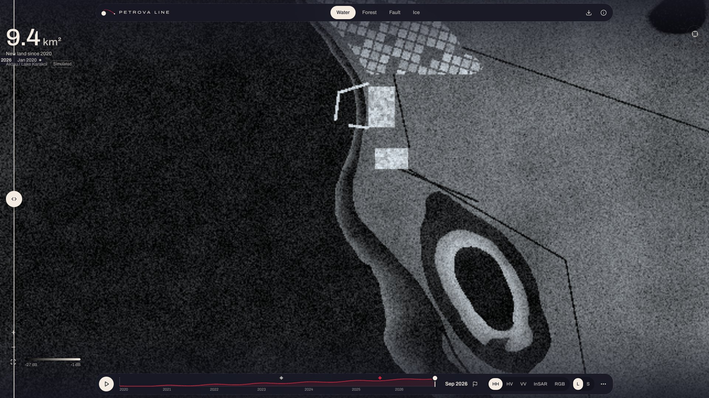
L-band radar: the shore, same daySimulated scene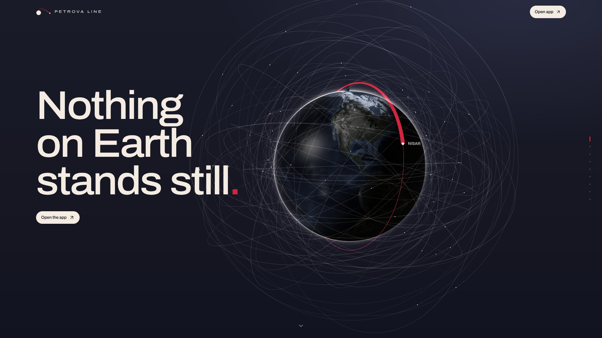
Scroll story: orbit, waves, four places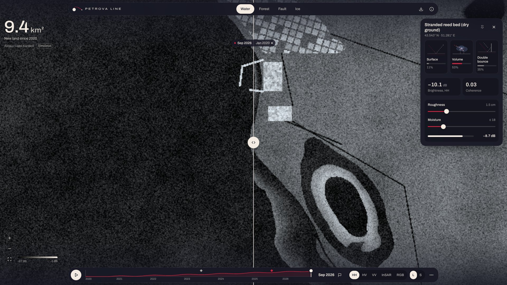
Radar console: compare, decode, exportSimulated sceneL-band reaches under the canopy. S-band reads the surface.
One backscatter model for every pixel: roughness, moisture, vegetation and structure in; HH, HV, VV and phase out.
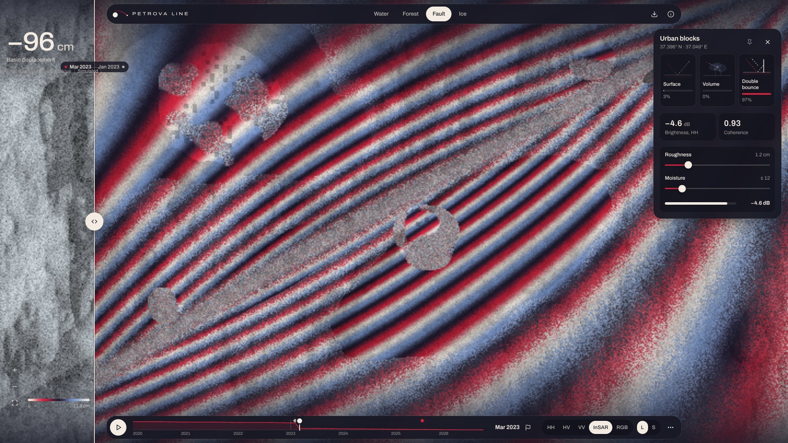
Simulated sceneInSAR: one fringe is 11.9 cm of ground motion at L-band.
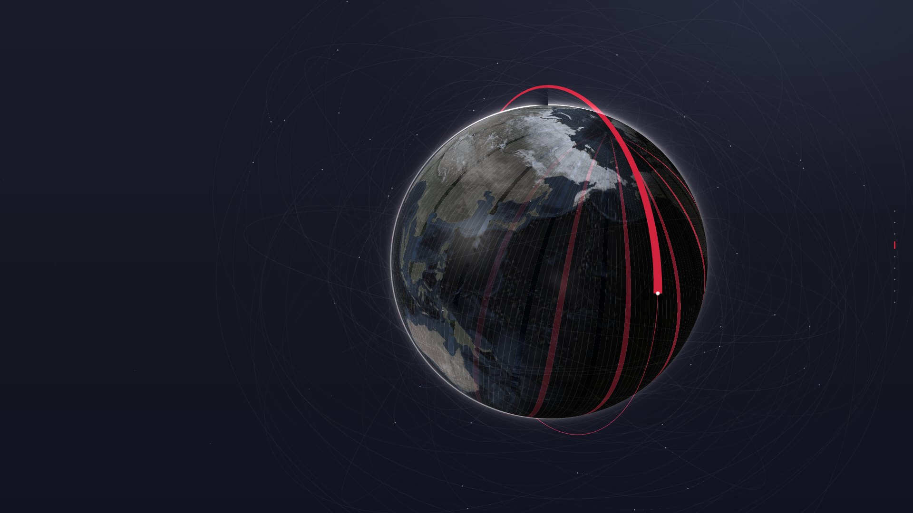
Nearly all land and ice, twice every 12 daysThe radar scenes are simulated from these parameters. Next: load NISAR products from NASA's ASF archive.
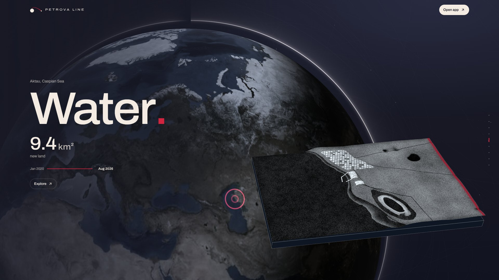
Water · Caspian Sea · 9.4 km² new landSimulated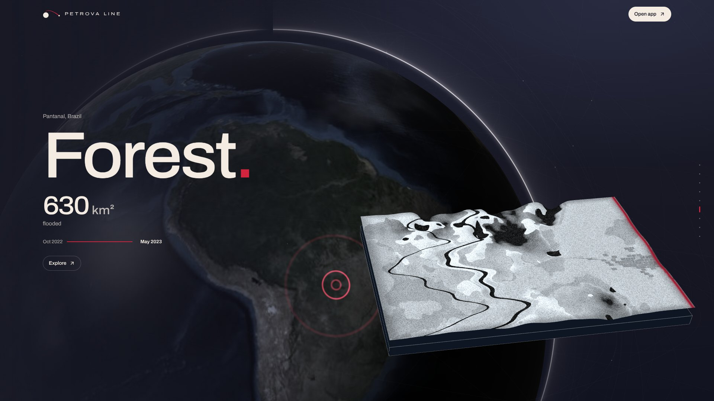
Forest · Pantanal · 630 km² floodedSimulated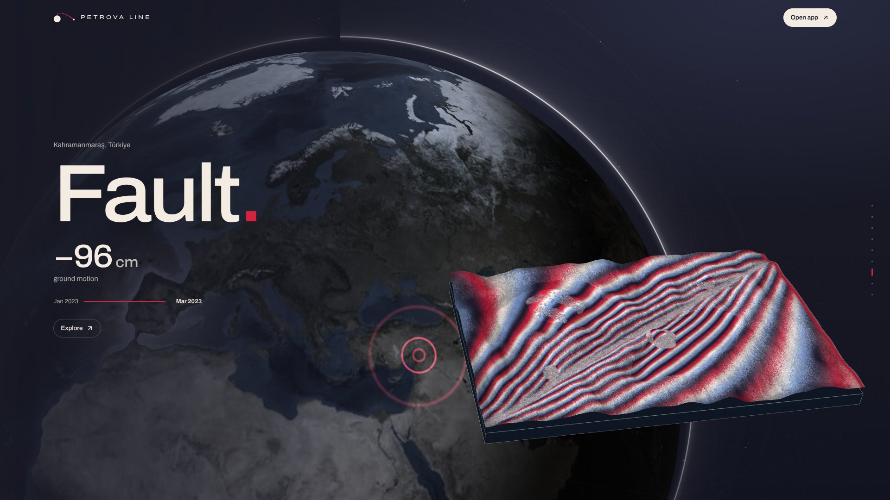
Fault · Kahramanmaraş · −96 cm motionSimulated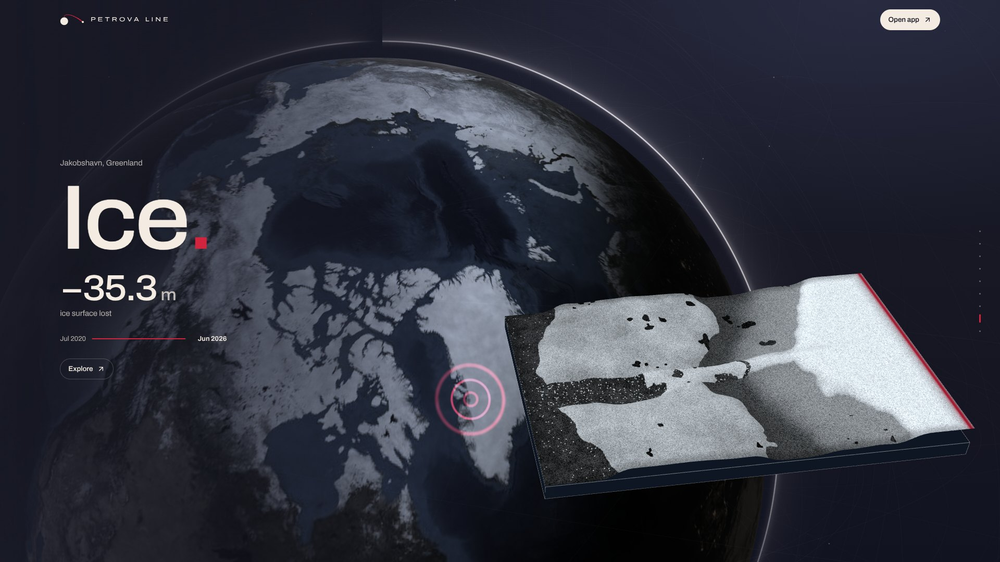
Ice · Jakobshavn · −35.3 m surfaceSimulated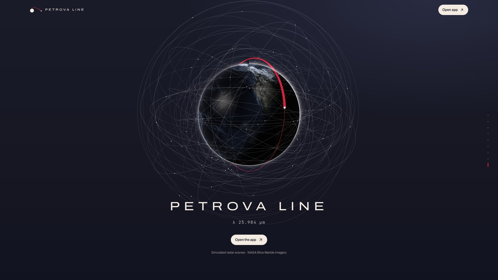